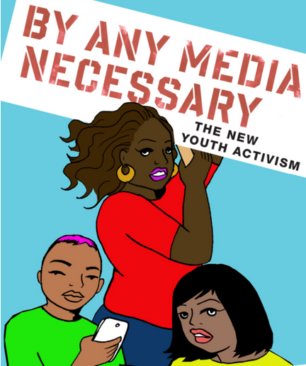

For more info, head over to codesign.mit.edu/enroll

By Any Media Necessary: The New Youth Activism. Book cover art by Julio Salgado.
For more info, head over to codesign.mit.edu/enroll
By Any Media Necessary: The New Youth Activism. Book cover art by Julio Salgado.
We had an amazing semester working with four Boston area worker-owned cooperatives to co-design a wide range of media and tech projects. You can learn more about each project by clicking on the featured images below, or check out an overview of all of them on this new project summaries page. Enjoy!
Restoring Roots is a worker-owner cooperative based in Jamaica Plain, MA that provides a variety of landscape consulting, design, installation, and maintenance to the people of Greater Boston, with a focus on edible plants and sustainability. We co-designed a transmedia marketing campaign over multiple social media platforms including Instagram and Twitter to promote the Restoring Roots cooperative, as well as the ideas of urban gardening and landscaping, permaculture, and worker-owned cooperatives. See http://restoringroots.instapage.com.
Our case study (draft): http://bit.ly/restoringroots-codesign-casestudy / Our final presentation: http://bit.ly/restoringroots-codesign-slides
Our project, Co-Everything, involved developing the concept and prototype of an online marketplace for co-ops by analyzing existing platforms that serve similar functions. We were able to collaborate with Loconomics, an online marketplace for freelancers, to provide valuable feedback and gather data about its current website model. Loconomics is a service-providing website and app co-founded by Joshua Danielson. This platform is similar to TaskRabbit, in which users can search for freelancers through the app and, alternatively, freelancers can set up a profile and list their services to be hired. Loconomics is currently in its beta stage, and we worked in collaboration with Joshua to gather user feedback. The feedback will not only serve to improve Loconomics but also give us insight on which models would work best in our development of Co-Everything.
Although it only exists as a prototype right now, Co-Everything is a single platform meant to foster a network of cooperatives, local businesses, and future clientele in the Boston area. We aim to develop this platform to form an accessible, easy connection between co-ops and their consumer base. We also envision Co-Everything providing a more efficient method for clients to buy co-op services, which would encourage consumers to buy more from co-ops. Co-ops need help connecting to other co-ops, connecting to clientele, advertising their services, and formalizing their transactions. On the other hand, consumers need help finding providers that match their values. We imagine that Co-Everything will fulfill these needs and target consumers who are looking for specific services and those who want to support co-ops, local businesses, or freelancers. Collaborating with Loconomics on their user testing and prototyping process helped improve the Loconomics site, and also lays the ground for our research into Co-Everything.
Link to our final presentation: http://bit.ly/co-everything-codesign-slides / Link to our Case Study: http://bit.ly/loconomicsXcoeverything-casestudy

Project Abstract: CERO, a cooperatively owned commercial composting company based in Dorchester, is now firmly in its second year of operation. After developing a unique business model and governance structure, and securing financing and its first few customers, CERO is now at the point where it needs to grow. From the beginning, CERO’s team was interested in focusing on marketing and sales for this design process. CERO is looking for ways to acquire more customers, and secure contracts more efficiently. Our design process collected information from a number of different actors that CERO interacts with regularly, to find different techniques that CERO could use to engage effectively with its potential customers. Our design process involved a number of experiments in sales and marketing, and resulted in a social media campaign aimed at emphasizing the environmental impacts of food waste, and the many benefits of composting. Additionally we used this social media campaign, as well as a new page on CERO’s website, to urge people to think about whether the food businesses they patronize compost and how they could demand better practices at the places where they spend their money.
Link to our final presentation: http://bit.ly/cero-codesign-slides
Link to the case study: http://bit.ly/cero-codesign-casestudy

During the spring semester of 2016, the MIT Collaborative Design Studio partnered with local worker-owned cooperatives to create civic media projects grounded in real-world community needs. Three MIT students partnered with a staff member from the Center for Civic Media at the MIT Media Lab to work with a staff member of a cooperative of Brazilian housecleaners called Vida Verde. Over the course of several months, we worked together to develop technology products to streamline the organization’s operations and communications.
More specifically, the goal of the project was to change some of Vida Verde’s systems in order to reduce the coordinator’s workload; to improve communication between the coordinator, cleaners, and clients; and to automate tedious steps of existing processes. While we briefly entertained the idea of creating a standalone product that would solve all of the coordination issues Vida Verde was facing, we ultimately elected to use a pre-developed, free platform Google Calendar to help coordinate cleaning schedules. We also developed an instant quote widget to ease the co-op’s coordinator’s workload in onboarding new clients.
The collaboration between Vida Verde and the MIT Codesign Studio eventually resulted in three projects: 1. an online price quote calculator for the Vida Verde website, 2. a new internal calendar system for scheduling cleanings, and 3. an upgrade to the cooperative’s website to make it more easily navigable and search engine optimized.
Here is a link to the final presentation slide deck: http://bit.ly/vidaverde-codesign-slides. A detailed case study can be found here: http://bit.ly/vidaverde-codesign-casestudy
In the last stretch of the class, we wrap up our media outreach for CERO and attempted to test a few other hypothesis, namely if restaurants will respond to the Massachusetts Waste Ban. The way we went about it to try not to force restaurants and be like “DO THIS OR ELSE”, the approach was more along the lines of “Look, here are the laws regarding composting, check if you are following them!”. We created a website: http://www.compostcompliance.com/ that would in theory allow owners to check if they are complying with the ban. When they sign up, we are able to know that the owners clicked and cares. We gathered about 30 emails through CERO and sent out the first batch yesterday. So far the results are not promising, not many people seem to be opening their emails and or signing up for our listing. It might be that the email count is too low but so far the results are inconclusive.
Another thing we are trying to do is start a petition to pressure a business into composting. The petition can be found here: https://actionnetwork.org/petitions/pressure-barcelona-brookline-to-compost. We have yet to mass send out this petition yet, but we will be sending it out this week, and hopefully see if the business respond in any sort of way.
The other important items we worked on was the presentation and the case study. The case study is almost done but requires some more revision which we will finish off this coming weekend.
Presentation:
Draft Case Study:
https://docs.google.com/document/d/1_9unGIc9Pzr3QUBywzrWbviwTRT8I0yLQri2jg08Vq4/edit
This last week we’ve come up with a title for our project. We’ve decided to call it “Loconomics x Co-Everything: Modeling an Online Marketplace for Co-ops and Freelancers. And, although there are two sides to our prototype (co-op and freelancer), this one photo best represents both sides of our project (as their respective profile pages are almost identical).

Loconomics is an up and coming service-providing website and app co-founded by our extended client for this class, Joshua Danielson. This platform is similar to TaskRabbit, in which users can search for freelancers through the apps and alternatively freelancers can set up a profile and list their services to be hired.
Though it only exists as a prototype right now, Co-Everything is a single platform or reference list meant to help develop a network of cooperatives, local businesses, and future clientele in the Boston area. We aim to develop this platform to connect co-ops, local businesses, and freelancers with not only each other but with a consumer base as well. With our new excitement for the project at hand, we began focusing on creating a functional business model canvas for it.
Thus, we decided to combine our motivations behind Co-Everything to the current Loconomics platform by attempting to aid Loconomics in their beta stage. This collaboration includes testing the Loconomics prototype and finding ways they can improve based upon user feedback. By testing hypotheses through user testing and interviews and even building our own prototypes that serve similar functions, we hope to advance the effort connecting co-ops and clients through an online marketplace.
Co-ops need help connecting to other co-ops, connecting to clientele, advertising their services, and formalizing their transactions. On the other hand, consumers need help finding providers that match their values. This web platform will fulfill these needs and target towards consumers who are looking for specific services and those who want to support co-ops, local businesses, or freelancers. In addition to growing their consumer base, co-ops can benefit by finding other co-ops and freelancers.
The final version of the prototype ( http://ix8i2j.axshare.com/) has been updated with changes based on user feedback gathered at the DiscoTech. During this testing session we were able to see what may have not been as intuitive as we had thought as well as gather suggestions for how to improve it. A consistent issue we saw amongst almost every user was that they did not know that they had to switch tabs in the “Sign Up” pop-up in order to sign up as a co-op, freelancer, or client. In order to remedy this mix up, Kai edited the prototype by changing and darkening the labeled tab fonts and bolding them upon selection to make these differences more prominent. In addition to this, upon opening the “Sign Up” page, the selected automatically tab was “Client” which was located all the way to the right, but we assumed since people read from left to right, that it may be more intuitive to have the far left tab to be the default selection.
Before
After
In addition to this, another complaint we had with our prototype is that we should indicate which fields are required and which are optional during the profile creation stage in the setup process. We fixed this by adding the classic red stars next to required fields.
Another issue was with the “add service” field during setup and the “+” button which is intended to add the service and price of service to your listed services on your profile. We fixed this by making the hint text inside the “add service” textbox to “type to add service.” We also made this hint text a lighter font color to show that it is a field to be filled. Lastly, we added tooltips to the “type to add service” textbox, the “$/hr” textbox, and the “+” button. There was also some confusion when it came to the “add-on” option for services on a user’s service list, so there is now a tooltip for that as well.
In addition to these areas of confusion, users also had suggestions for additional features in the prototype. For example, a user said he’d like it if, when clicking on a message in the inbox, a pop-up would appear where the co-op or freelancer could message the client back. Following along this idea, we decided that the freelancer or co-op accept an inquiry and message back the client (but only after accepting the request). After accepting, the co-op or freelancer can see the client’s address and additional notes about the service request so that there is no breach of privacy and a client isn’t sharing their personal information with those they have not hired.
Our last major edit was adding a feature where you can schedule to add a booking by clicking directly on a date on the calendar on the scheduling page. This feature is located on the date “Friday, April 15” on the calendar.
Overall, there were a lot of great suggestions and this user testing proved to be essential to improving our prototype for Loconomics.
Link to our final presentation: http://bit.ly/co-everything-codesign-slides
Link to our Case Study: http://bit.ly/loconomicsXcoeverything-casestudy
Hi everyone!
As I wasn’t able to attend the DiscoTech on Sunday, I wanted to take the time to share where I was and what it has meant to me. Two years ago, during my second semester at Wellesley, I decided to apply to become a member of the Wellesley College Lecture Society. This long and grueling three week process eventually resulted in my and my class of 8 others being accepted into the society. Every semester we hold different themed lecture series and bring outside speakers to Wellesley’s campus to shed light on things that they are working on or are passionate about. For example, this semester’s lecture series has been all about Hip Hop and Technology and how the genre has changed throughout the years as well as it’s effect on Black culture and how it is perceived. We’ve brought speakers ranging from Kariann Goldschmitt, an ethnomusicologist, who spoke about Brazilian Hip-Hop and the Afro-diasporic imagination, to Prince Charles Alexander, a Berklee College Professor and famous producer, who talked about the evolution of technology in regards to how sounds have changed throughout hip-hop’s history. On Tuesday we even had a lecture by up and coming artist, Mari, who just graduated from Williams, and his manager J Harmony, a recent Columbia grad, about the struggles of being graduates from elite schools who could have gotten high-paying jobs, but instead stayed true to their passions in such a cut-throat industry. These lectures are advertised to everyone on and off campus and have sparked post-lecture talk-backs, where we invite others to gather and discuss what they’ve learned in an open forum.
In this four year society there are annual events such as senior reception and also different executive board member chairs (president, vps, lecture, publicity, web, etc.). This past Sunday was senior reception, a day long gathering where all 45 members of the society come together to celebrate those whose four years are coming to an end. During this time, we discuss the ups and downs of the societal structure and different changes that may help benefit us in the future. Each senior (in this case, 15 of them), have written a 10 minute long speech talking about what this society has meant for them in relation to their Wellesley experience and how it has helped them learn more about themselves and others. This event usually lasts about 5 or so hours and ends with a community dinner and voting for the passing down of new executive board member positions.
I’m sad I had to miss such an awesome event for testing our prototype, but feel confident in the feedback I’ve received from Declan, Micky, and Lucia that we’ve gained enough insight for me to edit our current prototype for the better in preparation for next week’s presentation. Hopefully in the future, some of you will be able to attend some of our society’s lecture’s on Wellesley’s campus too!
Kai
Team VV had a great time at the DiscoTech on Sunday! We had a ‘Make your own glass cleaner’ station, told a whole bunch of people about how wonderful Vida Verde is, and did some additional user testing on our instant quote widget! We were especially excited that several people approached the table to inquire about potentially hiring Vida Verde and/or referring them to a friend. All around, we were pleased with how things turned out. At the very least, we had a lot of fun making and filling our mini bottles (photo credit: Sasha):
Our case study draft can be found HERE. It is definitely a work in progress, but we think that we have a solid foundation so far and are looking forward to iterating on it over the next couple of weeks. The working title of our case study is ‘Vida Verde: Streamlining Workflows’, since we felt that this was a succinct way of summing up the various projects and products we assembled for the co-op this semester. Our title image is currently Vida Verde’s logo, but we will likely switch that out for a screenshot of the completed quote widget once all of the updates have been pushed and it has been integrated into the co-op’s upgraded website:
The current version of our abstract can be found below:
During the spring semester of 2016, the MIT Collaborative Design Studio partnered with local worker-owned cooperatives to create civic media projects grounded in real-world community needs. Three MIT students partnered with a staff member from the MIT Media Lab to work with a cooperative of Brazilian housecleaners called Vida Verde. Over the course of several months, we worked together to develop technology products to streamline the organization’s operations and communications.
More specifically, the goal of the project was to alter some of Vida Verde’s systems in order to reduce the coordinator’s workload; to improve communication between the coordinator, cleaners, and clients; and to automate tedious steps of existing processes. While we briefly entertained the idea of creating a standalone product that would solve all of the coordination issues Vida Verde was facing, we ultimately elected to use open-source platforms like Google Calendar and free translation apps. By choosing this route rather than building something out from scratch, Vida Verde is now able to fully manage and maintain their technology without relying on an outside team for all of their business communications.
The collaboration between Vida Verde and the MIT Codesign Studio resulted in two projects: 1. an online price quote calculator for the Vida Verde website, and 2. a new internal calendar system for scheduling cleanings. We also upgraded the cooperative’s website to make it more easily navigable, and did some basic search engine optimization (SEO) to ensure that the website shows up easily in Google searches.


{kind=link}
{kind=link}
{kind=link}
{kind=link}